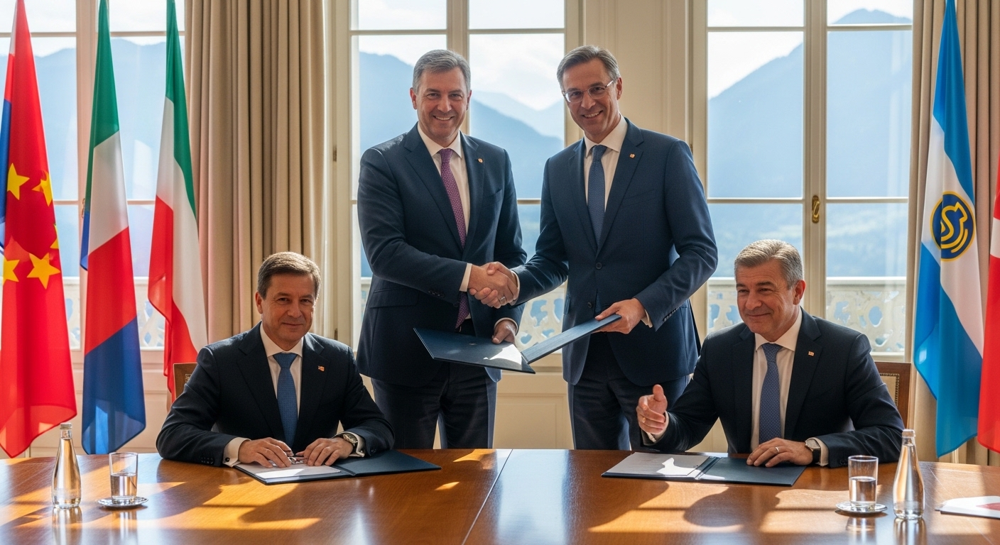
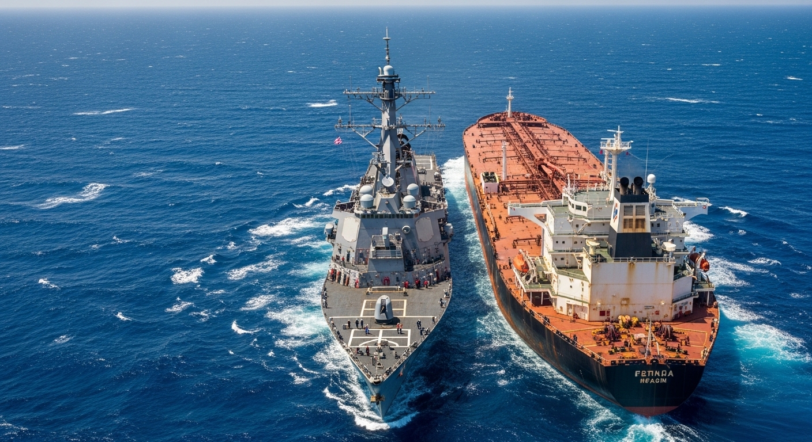
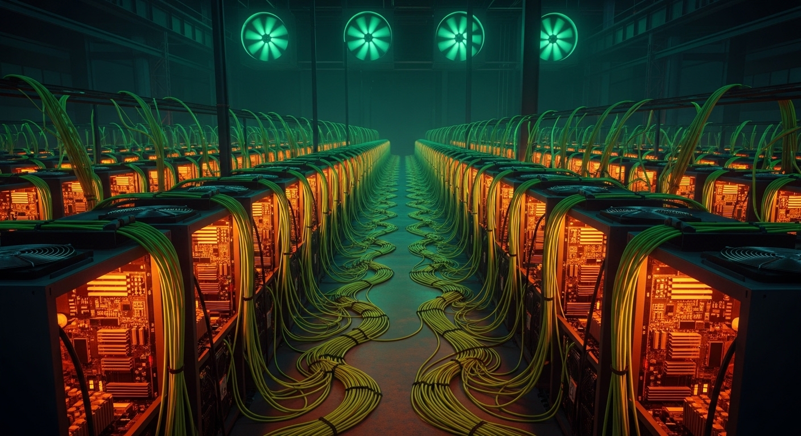
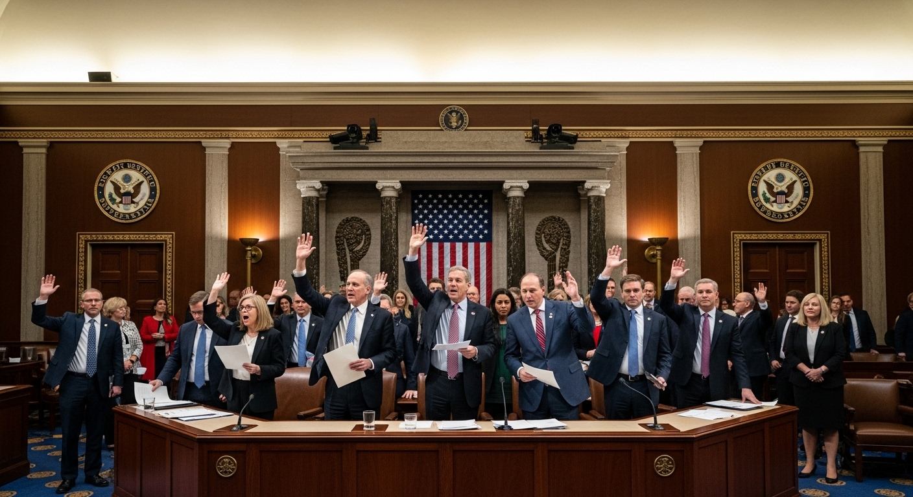
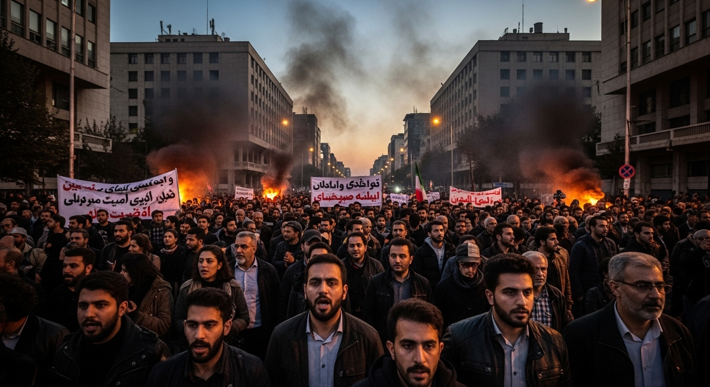

[CLASSIFIED] // CLEARANCE LEVEL: TS/SCI // EYES ONLY
# Comprehensive Analysis: US-Iran Direct Political and Economic Relations (2026)
## Executive Summary
In the wake of severe military escalations in early 2026, the direct relationship between the United States and the Islamic Republic of Iran has undergone a dramatic transformation. Moving away from the long-obsolete Joint Comprehensive Plan of Action (JCPOA), both nations have entered into a precarious diplomatic holding pattern governed by a new 14-point Memorandum of Understanding (MoU) signed on June 17, 2026. This agreement, brokered via intense multilateral mediation, establishes a strict 60-day window to negotiate a final status agreement.
This diplomatic pivot was not driven by sudden goodwill, but by intense domestic vulnerabilities on both sides. In the United States, the fallout from 'Operation Epic Fury,' combined with spiking domestic energy prices and looming midterm elections, forced a rapid executive pivot from military escalation to diplomatic containment. In Iran, the combination of a devastating U.S. naval blockade, aggressive sanctions targeting the digital economy, widespread protests across all 31 provinces, and a highly sensitive supreme leadership transition following the death of Ali Khamenei forced the regime to accept 'tactical diplomacy' for its own survival.
## 1. The Diplomatic Framework: The June 2026 MoU and Nuclear Negotiations
The architectural foundation of current U.S.-Iran diplomacy is the 14-point MoU signed on June 17, 2026 (referred to in various diplomatic channels as the Versailles or Islamabad MoU). This framework officially succeeds the defunct JCPOA, which was completely dismantled after the E3 nations triggered the snapback mechanism in late 2025. Following an April 2026 ceasefire brokered by Pakistan, formal negotiations under the new MoU commenced in Bürgenstock, Switzerland, on June 21, 2026.
While the MoU establishes a 60-day window for a final status agreement, negotiations are heavily hampered by deep-seated distrust and fundamental disagreements on implementation:
- * The Sequencing Dilemma: Iran demands frontloaded economic relief, specifically the immediate issuance of oil export waivers and the early-stage release of $12 billion of a proposed $25 billion conditional asset package. Conversely, the U.S. insists on verifiable nuclear rollbacks prior to any major sanctions relief.
- * Nuclear Verification: A central U.S. demand is the immediate restoration of full International Atomic Energy Agency (IAEA) monitoring to verify and safely down-blend Iran’s highly enriched uranium (HEU) stockpile, which currently stands at 60% enrichment.
- * Mediators and Backchannels: Given the lack of direct diplomatic relations, crucial mediation and backchannel communications are being facilitated by Oman, Qatar, Switzerland, and Pakistan. These intermediaries have been vital in preventing direct military re-escalation and managing the logistics of the Bürgenstock talks.
60
DAYS REMAINING
[STATUS: NEGOTIATION PENDING]


## 2. Economic Warfare
Sanctions & Blockades
Prior to the June 2026 diplomatic breakthrough, the United States pursued an unprecedented "maximum pressure" campaign dubbed "Operation Economic Fury." This campaign utilized Executive Orders 13846 and 13224 to choke off the Iranian economy through both physical and digital means.
The U.S. Sanctions and Blockade Strategy: The economic chokehold peaked on April 12, 2026, when the U.S. enforced a physical naval blockade that successfully crippled Iranian energy exports. By May 2026, Iranian crude exports plummeted to an unprecedented historical low of 200,000 to 260,000 barrels per day.
Simultaneously, the U.S. Office of Foreign Assets Control (OFAC) aggressively targeted Iran’s alternative financial mechanisms. OFAC targeted the "shadow fleet" of tankers, Chinese "teapot" refineries, and dismantled a sophisticated $7.8 billion cryptocurrency ecosystem. U.S. authorities designated major Iranian domestic crypto exchanges—including Nobitex, Bitpin, Ramzinex, and Wallex—which had processed over 50% of Iran's 2025 inbound capital, and seized approximately $1 billion in digital assets. Sanctions were also expanded to disrupt military procurement networks operating across Iran, Turkey, and the UAE.
Iranian Countermeasures
Tehran responded with high-leverage physical and economic countermeasures to force the U.S. back to the negotiating table:
- Strait of Hormuz Closure: On March 4, 2026, Iran implemented a physical closure of the Strait of Hormuz, using its geographic leverage to disrupt global energy transit in response to the blockade.
- The Parallel Digital Economy: To bypass SWIFT, Iran constructed a $7.7–$7.8 billion parallel digital financial network leveraging state-subsidized Bitcoin mining and local crypto exchanges.
- Domestic Asset Seizures: Facing catastrophic revenue shortfalls, the Iranian regime took the drastic step of seizing the domestic and overseas assets of more than 1,500 of its own citizens to fund state operations.
The current 60-day MoU framework offers a potential path out of this economic deadlock, establishing a phased, conditional mechanism to unfreeze up to $25 billion in Iranian assets in exchange for verifiable nuclear down-blending.

## 3. United States Domestic Pressures and Constitutional Friction
The executive execution of military actions has created a highly volatile domestic political environment in Washington. The execution of "Operation Epic Fury" triggered a severe constitutional clash between the executive and legislative branches.
Legislative Backlash and War Powers
On June 3, 2026, the House of Representatives passed an Iran War Powers Resolution (215-208) in a bipartisan rebuke of unilateral executive military action. Meanwhile, the Senate has actively used the FY2027 National Defense Authorization Act (NDAA) as financial leverage to demand strict accountability over civilian casualties and executive overreach.
While the interim MoU currently relies on temporary Treasury sanctions waivers to bypass immediate congressional blockades, any permanent "freeze-for-freeze" or final diplomatic treaty will legally trigger the Iran Nuclear Agreement Review Act (INARA). This guarantees an intense constitutional showdown, as Congress holds the statutory authority to review and potentially veto any final agreement.
Public Fatigue and Electoral Vulnerabilities
The Trump administration's rapid pivot to diplomacy in June 2026 was largely dictated by domestic political survival:
- * Public Opposition: Public opinion polls indicate deep weariness, with 53% to 56% of Americans opposing the military strikes, 75% opposing the deployment of ground forces, and a clear majority expressing skepticism about the durability of any peace deal.
- * Economic Strain: Spiking domestic retail gas prices and a ballooning $1.5 trillion defense budget have severely damaged public sentiment.
- * Midterm Elections: With the November 2026 midterm elections approaching, the administration was forced to abandon its rhetorical goal of "regime collapse" in favor of a diplomatic exit strategy to protect Republican congressional prospects.

## 4. Iranian Domestic Pressures and the Post-Khamenei Era
In Tehran, foreign policy decisions are being shaped by an existential domestic crisis characterized by a historic leadership transition, profound economic misery, and deep factional divisions.
The Ascension of Mojtaba Khamenei and the IRGC
The domestic political landscape underwent a seismic shift following the assassination of Supreme Leader Ali Khamenei in February 2026. By March 2026, his son, Mojtaba Khamenei, ascended to the position of Supreme Leader. Backed heavily by the Islamic Revolutionary Guard Corps (IRGC), the new leader has further militarized the state apparatus.
Because Mojtaba Khamenei’s young regime is highly dependent on the IRGC deep state, he cannot afford to project weakness to the West. Consequently, the IRGC dominates the security-state apparatus, permanently blocking any strategic normalization of relations with the United States. However, the leadership permits "tactical diplomacy" strictly as a mechanism for regime survival to secure immediate economic relief.
Factional Splits and Widespread Unrest
This rigid military stance exists in constant tension with other domestic forces:
- The Pragmatic Faction: Led by President Masoud Pezeshkian, pragmatic and reformist factions view negotiations with the West as an absolute economic necessity to lift the sanctions paralyzing the nation.
- The Catalyst of Protest: The driving force pushing the regime to the negotiating table is widespread popular unrest. Severe economic collapse and hyperinflation have sparked massive, ongoing protests across all 31 Iranian provinces. The regime recognizes that without immediate sanctions relief to stabilize the domestic economy, it faces a very real threat of internal collapse.
## CONCLUSION
The direct relationship between the United States and Iran in mid-2026 is defined by a highly fragile, transactional peace. Both nations have been forced to the negotiating table in Bürgenstock not by a shared vision of stability, but by the unbearable costs of continued conflict. For the U.S., domestic electoral survival, public war weariness, and legislative constraints have closed the window on military escalation. For Iran, systemic economic collapse, nationwide protests, and a delicate supreme leadership transition have made tactical sanctions relief an existential necessity. The next 60 days will determine whether the temporary framework of the June 17 MoU can be converted into a durable stabilization agreement, or if domestic hardlines in both Washington and Tehran will drag the two nations back toward open conflict.
*** Worker Confidence Verification ***
*No worker reports were marked as low confidence. All provided data was consistent, integrated smoothly, and has been successfully preserved in the finalized markdown document.*
END OF REPORT //